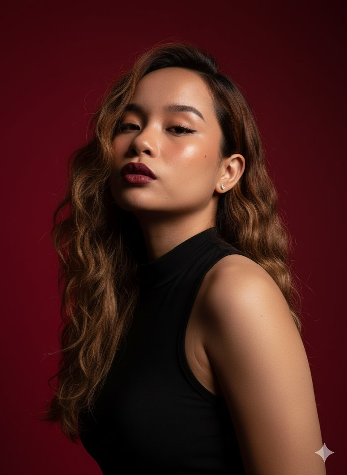

About Me

✦I'm a 24-year-old Filipino student from the University of the Philippines - Open University, currently on exchange at the National University of Singapore.
I've been the breadwinner of my family for a while now, and I worked other jobs along the way, performing in theater, tutoring, working in a cafe, selling food at bazaars, office work, being a student assistant, before I found freelancing. No boss, work whenever and wherever, that's the setup I live by, and it's not changing. These days I'm layering my own brand on top of that, building Tangi Jewelries and leaning into entrepreneurship for real, working for myself on top of working for others, using everything I've picked up along the way as my tools.
It started as survival. Now it's shifted into something else, wanting peace of mind, and wanting to build something bigger than myself.
My Journey
Started my Associate in Arts in Entrepreneurship at UPLB, earned scholarships along the way, performed in theater, and tutored elementary students.
Worked at an ice cream cafe and sold food at bazaars.
Took on office work and a student assistant role at UPOU FED, graduated from AA Entrepreneurship as part of the program's first batch, and started my Bachelor of Arts in Multimedia Studies at UPOU.
Started freelancing, virtual assistance for US and UK based service businesses, took on more community projects, online selling and pasabuy, and took my first trips abroad, to Hong Kong and Macau.
Became an exchange student in Singapore and visited Malaysia.
Target graduation year. Planning to apply for a master's abroad, take vlogging and content creation seriously, and focus fully on my own entrepreneurial journey.
Things I Love
Music and podcastsTaylor Swift for the genre-hopping and the storytelling, she writes from her own life and it shows. The Mel Robbins Podcast for actionable advice that doesn't ignore the emotional side of things.
Self-help booksRich Dad Poor Dad for money, Atomic Habits for systems, Ikigai for purpose. Three different angles on building a life that actually holds up.
TravelingJapan for the culture and the way old and new sit together. Switzerland for the scenery and how clean and safe everything feels. I've been to Hong Kong, Macau, Singapore, and Malaysia so far, plus exploring more of the Philippines.
Food and wellnessCheese and chocolate ice cream, leche flan, I've got a sweet tooth, though I'm working on minimizing it. Trying new foods, eating healthier, and getting more into the gym.
Passion Projects
Tangi Jewelries Jewelry
Tangi Jewelries started from something simple, I have a lot of ear piercings and could never find earrings that actually suited each one, so I decided to make them myself. That grew into something bigger: sentimental keepsake jewelry, piercings, rings, bracelets, and necklaces for promises, celebrations, and milestones, the kind you never take off because it holds a memory, not just decoration. Tangi is a Filipino word for someone treasured, the one above all others, which is exactly what a gift like this is meant to say.
BINGExp Theater
I've been part of BINGExp since 2019, a play and education company that blends theater, gaming, and cultural storytelling into immersive, gamified learning experiences. It's where I get to combine performance with purpose, bringing stories to life in ways that teach and connect people.
Content Creation Content
Still in the conceptualizing stage, no content live yet and no real following built, but this is where 2027 is headed. I've got the handle, @abracadab_rai on Instagram and TikTok, and the intent to document my journey as a student, virtual assistant, and entrepreneur in progress. Next year, I'm taking it seriously.